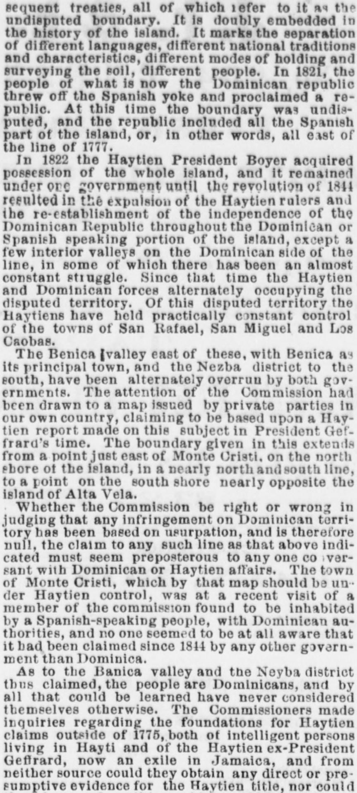
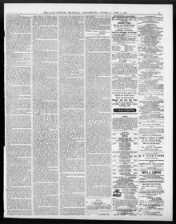

Ppanbh speaking portion of the Island, except a few interior valleysLa porción de habla española de la isla, excepto algunos valles del interior
The Evening Telegraph. Philadelphia [Pa.], April 6, 1871. Page 3. View the originalVer el original


See the full pageVer la página completaThe newspaper reported that Haytian and Dominican forces have alternately occupied disputed territory, with Haytiens holding practical control of San Rafael, San Miguel, and Los Caobas, while the Benica valley and Neiba district were overrun by both governments. It also noted a map issued by private parties—based on a Haytian report from President Geffrard's time—detailing a boundary line from Monte Cristi to the south shore, which the publication dismissed as preposterous. Furthermore, a member of the Commission recently found Monte Cristi inhabited by a Spanish-speaking people under Dominican authorities with no awareness of any outside claim since 1814.El periódico expuso que las fuerzas dominicanas y haitianas habían ocupado de forma intermitente comarcas limítrofes en litigio, reteniendo los haitianos el control material de San Rafael, San Miguel y Las Caobas, en tanto que el valle de Bánica [Benica] y el distrito de Neiba eran recorridos por destacamentos de ambos bandos. Mencionó asimismo un mapa impreso por particulares —fundado en una memoria haitiana de tiempos del presidente Geffrard— que trazaba una línea divisoria desde Montecristi hasta la costa sur, lindero que la publicación desestimó por absurdo. Además, un miembro de la comisión comprobó recientemente que Montecristi se hallaba habitado por gentes de habla hispana sujetas a las autoridades dominicanas, ajenas a reclamación extranjera alguna desde 1814.
FULL TEXT:TEXTO COMPLETO:
...sequent treaties, all of which refer to it as the undisputed boundary. It is doubly important in the history of the island. It marks the separation of different languages, different national traditions and characteristics, different modes of dividing and surveying the soil, different peoples. In 1821 the people of what is now the Dominican Republic threw off the Spanish yoke and proclaimed a republic. At this time the boundary was not disputed, and the republic included all the Spanish part of the island, or, in other words, was along the line of 1777....secuentes tratados, todos los cuales se refieren a ella como la frontera indiscutida. Es doblemente importante en la historia de la isla. Marca la separación de diferentes idiomas, diferentes tradiciones y características nacionales, diferentes modos de dividir y medir el suelo, diferentes pueblos. En 1821 el pueblo de lo que ahora es la República Dominicana se libró del yugo español y proclamó una república. En este momento la frontera no era disputada, y la república incluía toda la parte española de la isla, o, en otras palabras, estaba a lo largo de la línea de 1777.
In 1822 the Haytien President Boyer acquired possession of the whole island, and it remained under one government until the revolution of 1844 resulted in the expulsion of the Haytien rulers and the re-establishment of the independence of the Dominican Republic throughout the Dominican or Spanish speaking portion of the island, except a few interior valleys on the Dominican side of the line, in some of which there has been an almost constant struggle. Since that time the Haytien and Dominican forces alternately held all the disputed territory. Of this disputed territory the Haytiens have held practically constant possession of the towns of San Rafael, San Miguel, and Las Caobas.En 1822 el Presidente haitiano Boyer adquirió posesión de toda la isla, y permaneció bajo un solo gobierno hasta que la revolución de 1844 resultó en la expulsión de los gobernantes haitianos y el restablecimiento de la independencia de la República Dominicana en toda la porción dominicana o de habla española de la isla, excepto unos pocos valles interiores del lado dominicano de la línea, en algunos de los cuales ha habido una lucha casi constante. Desde ese momento las fuerzas haitianas y dominicanas mantuvieron alternativamente todo el territorio disputado. De este territorio disputado los haitianos han mantenido posesión prácticamente constante de los pueblos de San Rafael, San Miguel, y Las Caobas.
The Banica valley east of these, with Banica as its principal town, and the Nezba valley to the south, have been alternately overrun by both governments. The attention of the Commission has been drawn to a map issued by private parties in our own country, claiming to be based on a Haytien report made on this subject in President Geffrard's time. The boundary given by this map from a point just east of Monte Cristi, on the north shore of the island, in a nearly north and south line to a point on the south shore nearly opposite the island of Alta Vela.El valle de Banica al este de estos, con Banica como su pueblo principal, y el valle de Nezba al sur, han sido alternativamente recorridos por ambos gobiernos. La atención de la Comisión ha sido atraída a un mapa emitido por particulares en nuestro propio país, que pretende basarse en un informe haitiano hecho sobre este tema en tiempos del presidente Geffrard. La frontera dada por este mapa desde un punto justo al este de Monte Cristi, en la costa norte de la isla, en una línea casi de norte a sur hasta un punto en la costa sur casi opuesto a la isla de Alta Vela.
Whether the Commission be right or wrong in judging that any infringement on Dominican territory has been based on usurpation, and is therefore null, the claim to any such line as that above indicated must seem preposterous to any one conversant with Dominican or Haytien affairs. The town of Monte Cristi, which by that map is placed under Haytien control, was at a recent visit by a member of the commission found to be inhabited by a Spanish-speaking people, with Dominican authorities, and no one seemed to be at all aware that it had been claimed since 1844 by any other government than Dominica.Ya sea que la Comisión tenga razón o no al juzgar que cualquier infracción del territorio dominicano se ha basado en la usurpación, y es por tanto nula, la reclamación de cualquier línea como la arriba indicada debe parecer absurda a cualquiera que conozca los asuntos dominicanos o haitianos. El pueblo de Monte Cristi, que por ese mapa es colocado bajo control haitiano, fue encontrado en una visita reciente por un miembro de la comisión habitado por un pueblo de habla española, con autoridades dominicanas, y nadie parecía estar en absoluto consciente de que hubiera sido reclamado desde 1844 por ningún otro gobierno que Dominica.
As to the Banica valley and the other valleys thus claimed, the people are Dominicans, and from all that could be learned have never considered themselves otherwise. The Commission also made inquiries regarding the foundation of the Haytien claims outside of 1775, both of intelligent persons living in Hayti and of the Haytien ex-President Geffrard, now an exile in Jamaica, but from neither source could they obtain any direct presumptive evidence for the Haytien claim.En cuanto al valle de Banica y los demás valles así reclamados, la gente es dominicana, y por todo lo que pudo saberse nunca se ha considerado de otro modo. La Comisión también hizo averiguaciones respecto al fundamento de las reclamaciones haitianas fuera de 1775, tanto a personas inteligentes que viven en Haití como al ex Presidente haitiano Geffrard, ahora exiliado en Jamaica, pero de ninguna de las dos fuentes pudieron obtener evidencia presuntiva directa alguna para la reclamación haitiana.